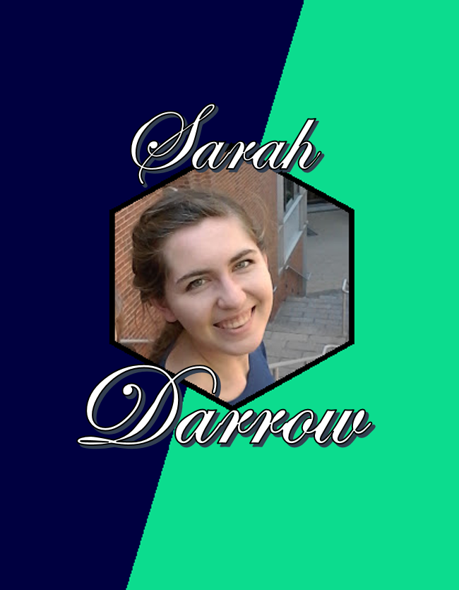

Resume
int getMovesByDegree(int size, struct point start, struct point* sortedMoves, int spotNum) {
int x, y, m, i, j;
// Possible changes to the start point to create moves
struct point moves[] = {{2, -1}, {2, 1}, {1, -2}, {1, 2}, {-2, -1}, {-2, 1}, {-1, -2}, {-1, 2}};
int numMoves = 0;
for(m = 0; m < 8; m++) {
// calculate possible move
moves[m].x += start.x;
moves[m].y += start.y;
x = moves[m].x;
y = moves[m].y;
if(x < size && x >= 0 && y < size && y >= 0) { // if move is on board
// Update degrees to acknowledge move to start spot
degrees[y*size +x]--;
if(array[y*size+x] == 0) { // if square hasn't been visited
numMoves++;
moves[m].d = degrees[y*size +x];
}
else // Weigh invalid move so it won't be put in array of generated moves
moves[m].d = 9;
}
else // Weigh invalid move so it won't be put in array of generated moves
moves[m].d = 9;
}
int min;
struct point temp;
// sort moves in increasing degree
for(i = 0; i < numMoves; i++) {
min = i;
for(j = i+1; j < 8; j++) {
if(moves[j].d < moves[min].d) min = j;
}
sortedMoves[i] = moves[min];
temp = moves[i];
moves[i] = moves[min];
moves[min] = temp;
}
return numMoves;
}
/*
* Generates a knight's tour recursively
* Fills the global array variable with the generated tour
* Returns number of spots visited in generating the tour
*/
long findTour(int size, struct point start, int spotNum, long visited, int moveMethod) {
array[start.y*size+start.x] = spotNum;
// Return a negative identifier if tour is complete
if(spotNum == size*size) return visited*-1;
struct point moves[8];
int numMoves, x, y, m;
int xChange[8] = {-2, -1, 1, 2, 2, 1, -1, -2};
int yChange[8] = {1, 2, 2, 1, -1, -2, -2, -1};
// Get possible next moves
switch(moveMethod) {
case RANDOM:
for(m = 0; m < 8; m++) {
x = start.x + xChange[m];
y = start.y + yChange[m];
if(x < size && x >= 0 && y < size && y >= 0 && array[y*size+x] == 0) {
visited = findTour(size, (struct point){x, y}, spotNum+1, visited+1, moveMethod);
if(visited < 0) return visited;
}
}
array[start.y*size+start.x] = 0;
return visited;
case DISTANCE:
numMoves = getMovesByDistance(size, start, moves);
break;
case DEGREE:
numMoves = getMovesByDegree(size, start, moves, spotNum);
break;
}
for(m = 0; m < numMoves; m++) {
visited = findTour(size, moves[m], spotNum+1, visited+1, moveMethod);
if(visited < 0) return visited;
}
array[start.y*size+start.x] = 0;
return visited;
}